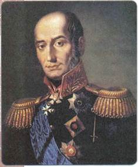
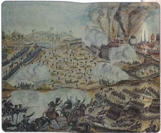
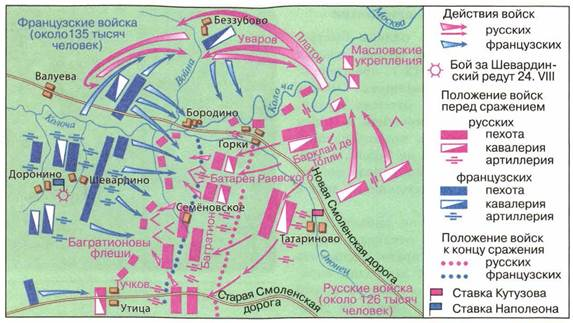
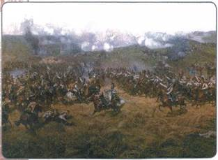
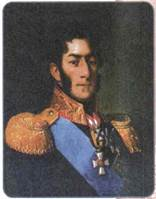
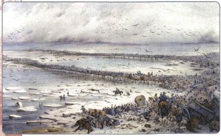

В чём заключалась главная причина победы России в Отечественной войне 1812 г.?
1. Накануне войны
К лету 1812 г. войны европейских коалиций с Францией с небольшими перерывами длились уже двадцать лет. За это время Франции удалось добиться господства в континентальной Европе. Многие страны потерпели военное поражение и стали зависимы от Наполеона. Независимую от него политику проводили лишь Англия, Россия и Швеция. Континентальная блокада тяжёлым бременем легла на экономику Англии, ослабляя её. Европейские страны в результате блокады оказались изолированы от передовых технологий, которыми обладала Британия. Это вело к дальнейшему упадку европейской экономики. Стремясь прекратить утечку денежных средств во Францию, Александр I издал в 1810 г. таможенный тариф, повышавший пошлины на ввоз в Россию предметов роскоши. Это было невыгодно Франции. Подобная таможенная война обостряла отношения между Россией и Францией.
Усилиями Наполеона страны Европы были разобщены. Возможность коллективного отпора Франции на этом этапе отсутствовала. Англия не имела возможностей для участия в военных действиях в Центральной Европе, так как она воевала с Данией и Швецией, а в июне 1812 г. оказалась втянута в войну с США. Таким образом, кроме России, в Европе к 1812 г. не было силы, способной противостоять Наполеону.
Неизбежность войны между Францией и Россией была к концу 1811 г. для всех очевидной. Не прошли незаметно и грандиозные военные приготовления Франции к войне на востоке.
2. Начало войны. Планы и силы сторон
Для войны с Россией Наполеон создал огромную армию, насчитывавшую примерно 600 тыс. человек. Эта Великая армия, как её называли, имела необычайно пёстрый национальный состав: французов в ней было только около половины, а остальную часть составляли поляки, пруссаки, австрийцы, итальянцы, голландцы и др. Это была поистине «армия двунадесяти языков».
Какие государства были покорены Наполеоном до вторжения в Россию?
Русская армия на западных границах имела к июню 1812 г. гораздо меньшую численность — около 200 тыс. человек. К тому же она была разделена на три части и рассредоточена. Главную силу русских войск составляла 1-я армия под командованием М. Б. Барклая де Толли, размещённая вдоль реки Неман. Южнее её, в Белоруссии, располагалась 2-я армия П. И. Багратиона. Ещё южнее 3-я армия А. П. Тормасова должна была прикрывать пути возможного наступления противника на Киев.
В ночь на 12 июня 1812 г. без объявления войны Наполеон начал вторжение в пределы России. Группа войск численностью около 420 тыс. человек переправилась через Неман. Их возглавлял Наполеон со своими прославленными полководцами, покорившими всю Европу.
Готовясь отразить удар, военное министерство и Главный штаб русской армии разрабатывали планы ведения войны. Их было несколько. Часть генералитета предлагала дать решающее сражение Наполеону вблизи границ и не дать противнику продвинуться вглубь страны. (Это соответствовало планам Наполеона.) Однако была и другая точка зрения: военный министр М. Б. Барклай де Толли, наоборот, предлагал перейти к обороне и всем трём армиям отходить под давлением французов, чтобы соединиться и дать решающее сражение позже.
Надеясь быстро разбить основные силы русских войск, Наполеон планировал принудить Александра к миру и превратить его в такого же зависимого правителя, какими стали к тому времени почти все европейские монархи. В дальнейшем через территорию России Наполеон намеревался нанести смертельный удар по Англии, отвоевав у неё Индию.

М. Б. Барклай де Толли

Смоленская битва. Рисунок XIX в.
3. Смоленское сражение
В соответствии с планом быстрого разгрома России вблизи границ Наполеон в июне 1812 г. предпринял ряд действий: вклинившись между частями 1-й и 2-й русских армий, он стремился их окружить и затем разгромить. Однако командовавший 1-й армией Барклай де Толли, а следом за ним и Багратион начали отступление, двигаясь на соединение друг с другом.
Русские войска не давали генерального сражения, отступая вглубь страны, вынуждая врага распылять свои силы. Барклай де Толли справедливо полагал, что каждый новый шаг врага на русской земле (в условиях начавшейся партизанской войны) будет даваться ценой больших усилий и жертв. Война приняла характер отечественной: население страны боролось за своё Отечество и его независимость. Первоначально армии Барклая и Багратиона должны были соединиться в районе Витебска. Однако лишь во второй половине июля 1-я и 2-я русские армии встретились в Смоленске. Тем самым первоначальный замысел Наполеона был сорван.
В начале августа 1812 г. под Смоленском произошло крупное сражение, ставшее одной из героических страниц в истории России. Несмотря на то что город удержать не удалось, французы потеряли под его стенами около 20 тыс. своих солдат. После того как русские войска и население покинули Смоленск, противнику достались лишь обугленные руины города. Ни продовольствия, ни фуража, на которые рассчитывал Наполеон, захватить здесь так и не удалось. Русская армия не только была сохранена, но и убедилась в том, что «непобедимого» противника вполне можно успешно бить.
4. Назначение М. И. Кутузова главнокомандующим
Неудачи первых недель войны, отступление русских армий без сражений породили при дворе и в обществе в целом не просто уныние, но и разговоры об измене. Главным объектом критики стал Барклай де Толли, которого с учётом его иностранного происхождения (предки Барклая де Толли переселились из Швеции в Ригу в XVII в.) обвиняли в предательстве. Всё чаще раздавались призывы к назначению главнокомандующим чрезвычайно популярного в армии и в народе, недавнего победителя Турции генерала М. И. Кутузова. Он никогда не был любимцем царя. Александр не мог простить ему поражения под Аустерлицем, самостоятельности, а самое главное — популярности в народе. Тем не менее император был вынужден подписать указ о назначении Кутузова главнокомандующим, уступив мнению общества.
Вступив в командование армией в августе, Кутузов объявил, что действия Барклая де Толли были вполне верными, и отступил ещё ближе к Москве.

Бородинская битва
Лишь на подступах к древней столице, в 124 км от неё, неподалёку от села Бородино, он решил дать генеральное сражение Наполеону.
5. Бородинское сражение
Генеральному сражению предшествовал бой 24 августа за Шевардинский редут, где русские войска под командованием генерала А. И. Горчакова в течение всего дня героически отражали атаки превосходящих сил противника. Сражение позволило русской армии выиграть время и обеспечить занятие выгодных позиций, построить защитные укрепления.
К этому времени силы сторон были примерно равны. Наполеон, по разным оценкам, имел 130—135 тыс. человек, русских было 110—130 тыс. человек. Главные цели сторон были различны. Если Наполеон стремился разгромить русскую армию и захватить Москву, то Кутузов планировал подорвать наступательный порыв противника и обескровить его, сделав дальнейшее наступление невозможным.
Крупнейшее сражение войны началось под Бородином 26 августа 1812 г. в половине шестого утра и продолжалось до позднего вечера. В ходе сражения французы атаковали русские укрепления (Багратионовы флеши, батарею Раевского и др.).

Эпизод Бородинской битвы. Деталь панорамы Бородино. Художник Ф. А. Рубо

П. И. Багратион
Самые ожесточённые бои развернулись вначале на Багратионовых флешах. Они длились здесь более 6 часов при непрерывном огне артиллерии. Флеши были захвачены противником лишь в середине дня. Не менее упорное сражение происходило и на батарее генерала Н. Н. Раевского. Здесь русские герои штыковыми ударами отбрасывали противника несколько раз, и лишь к концу дня французам удалось захватить центральную батарею. Правда, вечером Наполеон приказал отвести свои силы на исходные позиции. Однако и Кутузов отдал приказ отступать к Москве.
Несмотря на видимый успех неприятеля, фактически сражение не принесло победы ни одной стороне. Количество потерь было велико как никогда. Великая армия потеряла, по разным оценкам, от 35 до 60 тыс. человек (в том числе 49 генералов). Россия оплакивала гибель 45 тыс. своих сынов (в том числе 29 генералов). Оценивая позже эту битву, Наполеон сказал: «Самое страшное из всех моих сражений — это то, которое я дал под Москвой. Французы в нём показали себя достойными одержать победу, а русские оказались достойными быть непобедимыми».
Александр I пожаловал Кутузова высшим военным чином генерал-фельдмаршала и потребовал дать новое сражение. Однако на военном совете в подмосковной деревне Фили, состоявшемся 1 сентября, Кутузов принял решение оставить Москву без боя с целью сохранения армии. Здесь он произнёс своё знаменитое «С потерей Москвы не потеряна Россия». Как показал дальнейший ход событий, этот шаг оказался единственно верным в тех условиях.
Кутузов и Барклай де Толли, изучив военную стратегию предыдущих походов Наполеона, предложили новую стратегию борьбы с ним. Наполеон оказался не готов к ней.
6. Тарутинский манёвр
Русская армия покинула Москву 2 сентября. Следом за ней двинулось население. Наполеон вступил в опустевший город и отдал его на разграбление своей армии. В соборах Кремля были устроены конюшни. Грабежи и насилие носили невиданный характер. Разворованы были даже захоронения русских царей в Архангельском соборе Кремля. В Москве начался пожар, опустошивший весь город.
Пока Наполеон ждал письма от Александра I с согласием на мирные переговоры, русская армия совершила блистательный манёвр. Отступив по Рязанской дороге на восток, она внезапно развернулась на юг и разбила лагерь у села Тарутина. Так Кутузов перекрыл пути возможного продвижения неприятеля к Туле с её оружейными заводами и Калуге, где находились склады продовольствия и оружия. Французы надолго потеряли противника из виду. Это совершенно обескуражило Наполеона: он начал всерьёз сомневаться в успехе своего похода в Россию.
7. Партизанское движение
С первых же дней война носила общенародный, отечественный характер. В ней участвовали многие народы России. По всей России шёл сбор материальных средств для нужд действующей армии, из добровольцев формировалось ополчение. Только в Петербурге в ряды ополчения вступило 13 тыс. человек.
Народный характер войны наиболее ярко проявился в действиях крестьян. Они не только оказывали помощь русской армии продовольствием, но и сами боролись с противником. Крестьяне решительно отказывались продавать продовольствие и фураж французам, а при приближении неприятеля жгли избы, амбары с убранным хлебом, угоняли скот, а сами уходили в леса. Ещё до Бородинского сражения Наполеон терял ежедневно по нескольку сотен солдат, которые гибли от рук партизан.
По инициативе адъютанта П. И. Багратиона Дениса Васильевича Давыдова было решено придать партизанскому движению организованный характер. Стали создаваться армейские партизанские отряды. Первый из них, состоявший из гусар и казаков, возглавил сам Давыдов, второй — штабс-капитан Александр Фигнер. Отлично владея французским языком, Фигнер собирал ценные сведения в тылу врага, в том числе в захваченной Москве (он даже намеревался убить Наполеона). Большую известность приобрёл крестьянский партизанский отряд, организованный крепостным Герасимом Куриным под Москвой. Этот отряд не раз успешно громил довольно крупные силы регулярной армии Наполеона. Всероссийскую известность своими отважными действиями против войск противника приобрела крестьянка-партизанка Сычёвского уезда Смоленской губернии Василиса Кожина. Сражавшийся рука об руку с Д. В. Давыдовым Александр Чеченский был награждён за личное мужество и героизм золотым оружием. Лишь за первый месяц после Бородинского сражения неприятель потерял от действий партизан 30 тыс. человек. Даже при отсутствии активных боевых действий в период пребывания в Москве Наполеон терял ежедневно полторы тысячи человек.
8. Изгнание Наполеона из России
Пребывая в Москве в течение месяца и уже понимая свою обречённость, Наполеон трижды пытался начать переговоры о мире с Александром I, но ответа на свои письма так и не получил.

Переправа через Березину 29 ноября 1812 г. Литография В. Адама
Тогда Наполеон в преддверии зимы решил покинуть Москву и двинуть остатки армии на неразорённый юг России. Оставляя город, он приказал взорвать Кремль, храм Василия Блаженного и другие национальные святыни. Лишь благодаря самоотверженности русских патриотов удалось сорвать эти планы. 6 октября французы покинули Москву, но на их пути встала окрепшая и увеличившаяся численно русская армия. Поражения, нанесённые французам под Тарутином и Малоярославцем (этот город 8 раз переходил из рук в руки), вынудили Наполеона повернуть войска на им же самим опустошённую Смоленскую дорогу.
Отступающего к западным границам врага преследовали русская армия и партизанские отряды. Ранняя и суровая зима стала ещё одним бедствием для французов. Великая армия постепенно превращалась в неуправляемую огромную голодную и замёрзшую толпу. При переправе через реку Березину Наполеон потерял 30 тыс. воинов. Границу сумели перейти лишь жалкие остатки Великой армии. Сам император ещё раньше, бросив войска, бежал в Париж. Встретившим его придворным на вопрос о том, где же армия, он был вынужден ответить: «Армии больше нет!»
В конце декабря 1812 г. генерал-фельдмаршал М. И. Кутузов доложил царю: «Война окончилась за полным истреблением неприятеля». Изданный Александром 25 декабря манифест об изгнании врага из России ознаменовал окончание Отечественной войны.
ПОДВЕДЁМ ИТОГИ
Нашествие «двунадесяти языков» на Россию было успешно отражено. Со стороны России Отечественная война (12 июня—14 декабря 1812 г.) носила справедливый, освободительный, подлинно народный характер. Свой вклад в победу наряду с русскими внесли белорусы, украинцы, татары, башкиры, грузины и представители многих других народов. Победа в Отечественной войне подтолкнула к освободительной борьбе жителей покорённых Наполеоном европейских стран.
Вопросы и задания для работы с текстом параграфа
1. Каковы были основные причины, приведшие к войне между Россией и Францией в 1812 г.? 2. Чем можно объяснить многонациональный состав Великой армии Наполеона? 3. Дайте сравнительный анализ военных планов сторон накануне войны. 4. В чём состояло значение Смоленского сражения?
5. Опишите ход, основное значение и итоги Бородинской битвы. Дайте военно-политическую оценку этого сражения. 6. Какова роль партизанского движения в достижении победы над Наполеоном? 7. В 1812 г. против России выступила не просто Франция, против России выступила вся Европа. Согласны ли вы с этим утверждением?
Работаем с картой
Покажите на карте направления движения армии Наполеона и русских армий в начале и в конце военных действий на территории России.
Изучаем документ
ИЗ РАБОТЫ ИСТОРИКА Е. В. ТАРЛЕ «НАПОЛЕОН»
Конечно, коренной из всех его [Наполеона] ошибок была ошибка, происшедшая из полного незнания и непонимания русского народа. Не только он, но и буквально никто в Европе не предвидел, до каких высот героизма способен подняться русский народ, когда дело идёт о защите родины от наглого, ничем не вызванного вторжения. Никто не предвидел, что русские крестьяне обратят весь центр своей страны в сплошную выжженную пустыню, но ни за что не покорятся завоевателю. Всё это Наполеон узнал слишком поздно.
Согласны ли вы с мнением Е. В. Тарле о главной причине поражения Наполеона в России? Поясните свой ответ.
Думаем, сравниваем, размышляем
1. Подготовьте сообщение об одном из сражений Отечественной войны 1812 г., опираясь на данные энциклопедий и справочников. 2. Используя дополнительную литературу, найдите информацию о действиях одного из партизанских отрядов в годы Отечественной войны. 3. Объясните, почему считается, что именно Тарутинский манёвр М. И. Кутузова во многом стал решающим для исхода войны 1812 г. 4. Узнайте о том, что такое Военная галерея Эрмитажа. Чем можно объяснить её появление? 5. Опираясь на информацию энциклопедий, составьте биографическое сообщение об одном из героев Отечественной войны 1812 г. 6. Узнайте, какие боевые награды существовали в русской армии в 1812 г., за какие заслуги их давали. 7. Разделившись на группы, найдите информацию и подготовьте в электронном виде презентацию-каталог наград войны 1812 г.